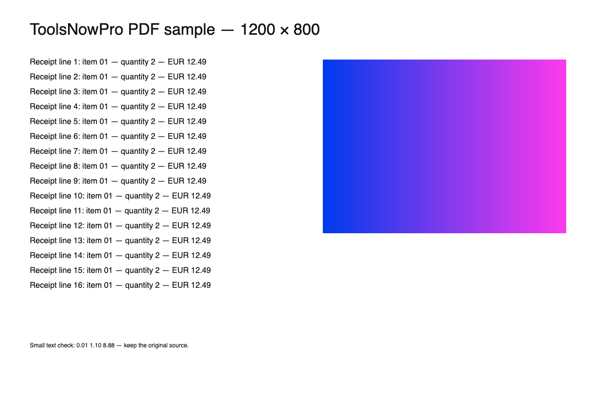

The JPG to PDF tool creates a PDF from one or more images in your browser. It accepts browser-decodable images such as JPG, PNG, and WebP. It redraws the image on a white canvas, encodes that canvas as JPEG, and embeds the JPEG in the PDF. This is a lossy conversion, even with the highest quality setting.
A reproducible conversion
- Choose a sharp image, such as a 1200 × 800 pixel photograph. The preview should show those dimensions.
- Choose High quality, set a filename, and convert.
- Open the downloaded PDF. It should contain one page with the same landscape proportions.
- Repeat with the lower quality settings and compare the same small details at the same zoom level.
This workflow checks whether the output is useful for your file. It does not establish that every source retains the same visual quality.
What the settings actually change
| Setting | JPEG encoder parameter | When to try it |
|---|---|---|
| High quality | 0.98 | Small text and fine detail |
| Balanced | 0.92 | General photos; inspect the result |
| Smaller file | 0.85 | When file size matters more than fine detail |
These values are encoder inputs, not percentages of quality preserved. Exact file size and artifacts depend on the source and the browser's JPEG encoder. Pixel dimensions are retained, but pixel colors can change during recompression.
Measured example: one input, three downloads
On October 1, 2026, we converted a generated 1200 × 800 PNG with receipt-style text and a color gradient using Chrome 154.0.8037.58 on macOS. The source was 118,036 bytes. Each PDF contains one 1200 × 800 point page and one 1200 × 800 JPEG image.

| File | Bytes | Setting |
|---|---|---|
| Original PNG | 118,036 | 1200 × 800 pixels |
| High quality PDF | 137,453 | 0.98 |
| Balanced PDF | 100,965 | 0.92 |
| Smaller file PDF | 83,952 | 0.85 |

The highest-quality PDF is larger than this source PNG. These measurements apply to this one fixture and browser. They do not prove lossless conversion or predict the file size of your own photo. We checked the PDF page and image dimensions; we have not assigned a visual-quality score.
Page size: pixels become PDF points
With “Image dimensions (points)” selected, the converter uses the image width and height as the PDF page dimensions in points. A 1200 × 800 pixel image therefore produces a 1200 × 800 point page, approximately 16.67 × 11.11 inches (72 points per inch). For a printable document, choose A4 or US Letter. Those options fit each image inside a portrait page with a 24-point margin and retain the image’s proportions. Source print-DPI metadata is not retained; check the page in your PDF viewer before printing.
Check a receipt or scan before submitting
- Compare the smallest text, decimal points, and signatures against the source image.
- Check the first and last lines for clipping and confirm the orientation.
- Look for halos around dark letters on a pale background.
- Confirm the file opens in a second PDF viewer if the document is important.
Keep your source file. A PDF wrapper cannot recover text from a blurry photo. If you need exact original JPEG bytes, lossless PNG storage, or a document-preservation workflow, use a converter designed for those requirements.
Limits that affect the result
Transparent areas become white. You can add up to 20 images, reorder them with the arrow controls, rotate pages, and remove unwanted pages before downloading. The output has no searchable OCR text or cropping editor. Limits are 10 MB and 20 megapixels per file, with 60 megapixels in total. Unsupported files are skipped with a status message.
For your own comparison, record the source dimensions and bytes, the browser, each quality setting, the output bytes, and whether small text remains legible.
Convert and inspect your image
Start with High quality and check the downloaded PDF before sharing it.
Open JPG to PDF →Related tools
Resize or convert the source image · Create a PDF from your images